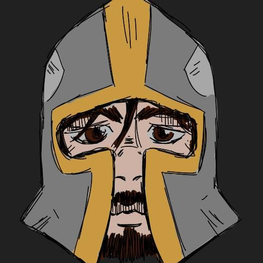

Sobre mí
- Edad: 30 años
- Ubicación actual: Capital Federal, Buenos Aires, Argentina
Hola, soy Leandro Ferrero, un ex cocinero que, buscando un cambio de rumbo, comenzó a estudiar programación. Pasé por la UTN y realicé cursos en Codo a Codo de QA Testing, Fullstack Python y PHP. También me especialicé en videojuegos (Unity 2D y 3D) en Talento Tech. Mi misión es fusionar la disciplina de la alta cocina con la lógica del desarrollo de software.
